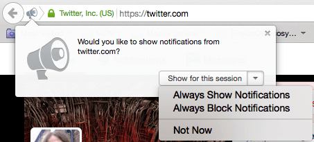

The Notifications API allows web pages to control the display of system notifications to the end user — these are outside the top-level browsing context viewport, so therefore can be displayed even the user has switched tabs or moved to a different app. The API is designed to be compatible with existing notification systems across different platforms.
Concepts and usage
On supported platforms, showing a system notification generally involves two things. First, the user needs to grant the current origin permission to display system notifications, which is generally done when the app or site initialises, using the Notification.requestPermission() method. This will spawn a request dialog, along the following lines:

From here the user can choose to allow notifications from this origin, block notifications from this origin , or to not choose a this point. Once a choice has been made, the setting will generally persist for the current session.
Note: As of Firefox 44, the permissions for Notifications and Push have been merged. If permission is granted for notifications, push will also be enabled.
Next, a new notification is created using the Notification() constructor. This has to be passed a title argument, and can optionally be passed an options object to specify options such as text direction, body text, icon to display, notification sound to play, and more.
In addition, the Notifications API spec specifies a number of additions to the ServiceWorker API, to allow service workers to fire notifications.
Note: To find out more about using notifications in your own app, read Using the Notifications API.
Notifications interfaces
Notification- Defines a notification object.
Service worker additions
ServiceWorkerRegistration- Includes the
ServiceWorkerRegistration.showNotification()andServiceWorkerRegistration.getNotifications()method for controlling the display of notifications. ServiceWorkerGlobalScope- Includes the
ServiceWorkerGlobalScope.onnotificationclickhandler for firing custom functions when a notification is clicked. NotificationEvent- A specific type of event object, based on
ExtendableEvent, which represents a notification that has fired.
Specifications
| Specification | Status | Comment |
|---|---|---|
| Notifications API | Recommendation | Living standard |
Browser compatibility
| Feature | Chrome | Firefox (Gecko) | Internet Explorer | Opera | Safari |
|---|---|---|---|---|---|
| Basic support | 5webkit[1] 22 |
4.0 (2.0)moz[2] 22.0 (22.0) |
Not supported | 25 | 6[3] |
| Available in workers | ? | 41.0 (41.0) | ? | ? | ? |
| Service worker additions |
42.0 |
42.0 (42.0)[4] | ? | ? | ? |
| Feature | Android | Android Webview | Firefox Mobile (Gecko) | Firefox OS | IE Mobile | Opera Mobile | Safari Mobile | Chrome for Android |
|---|---|---|---|---|---|---|---|---|
| Basic support | ? |
(Yes) |
4.0 (2.0)moz[2] 22.0 (22.0) |
1.0.1moz[2] 1.2 |
Not supported | ? | Not supported |
(Yes) |
| Available in workers | ? | ? | 41.0 (41.0) | (Yes) | ? | ? | ? | ? |
| Service worker additions | Not supported | Not supported | 42.0 (42.0)[4] | (Yes) | ? | ? | ? | 42.0 |
[1] Before Chrome 22, the support for notification followed an old prefixed version of the specification and used the navigator.webkitNotifications object to instantiate a new notification. Before Chrome 32, Notification.permission was not supported.
[2] Prior to Firefox 22 (Firefox OS <1.2), the instantiation of a new notification was done with the navigator.mozNotification object through its createNotification() method. In addition, the Notification was displayed when calling the show() method and supported only the click and close events (Nick Desaulniers wrote a Notification shim to cover both newer and older implementations.)
[3] Safari started to support notification with Safari 6, but only on Mac OSX 10.8+ (Mountain Lion).
[4] Firefox 42 has shipped with web notifications from Service Workers disabled.
Firefox OS permissions
When using notifications in a Firefox OS app, be sure to add the desktop-notification permission in your manifest file. Notifications can be used at any permission level, hosted or above:
"permissions": {
"desktop-notification": {}
}